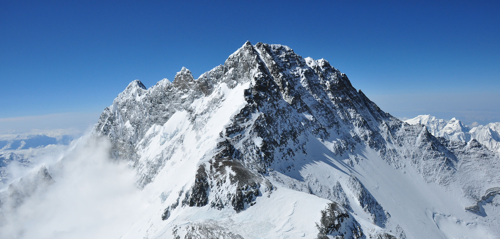
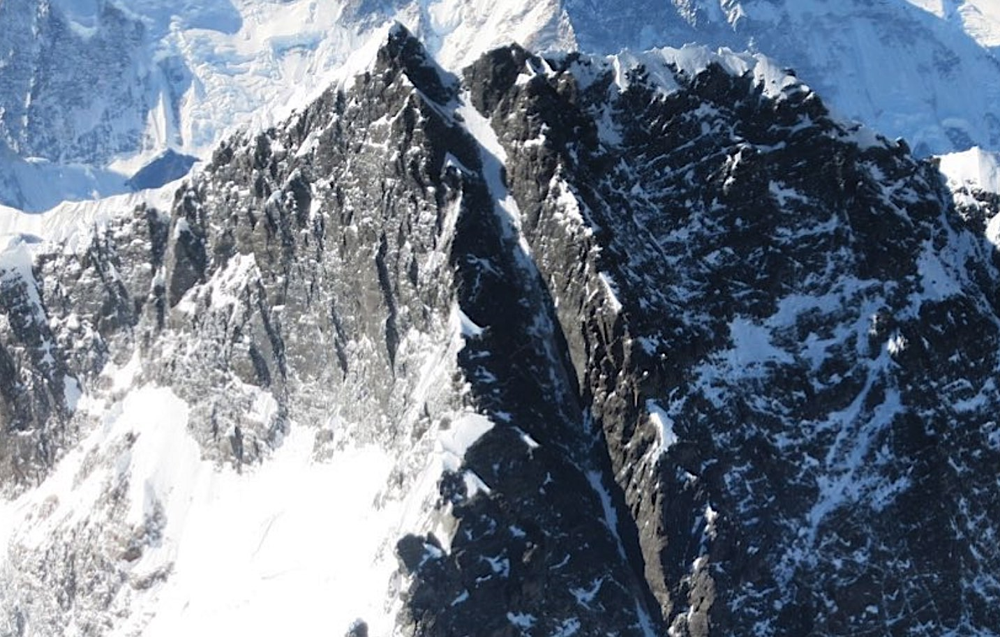
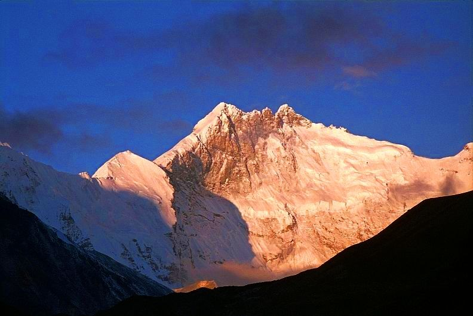
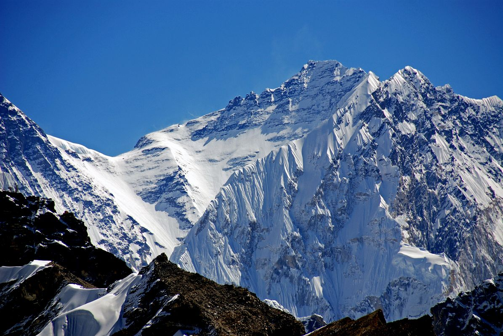
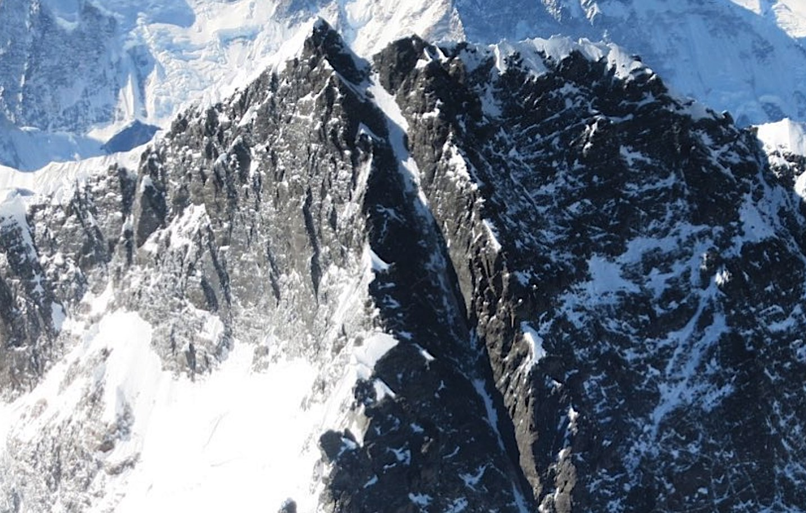
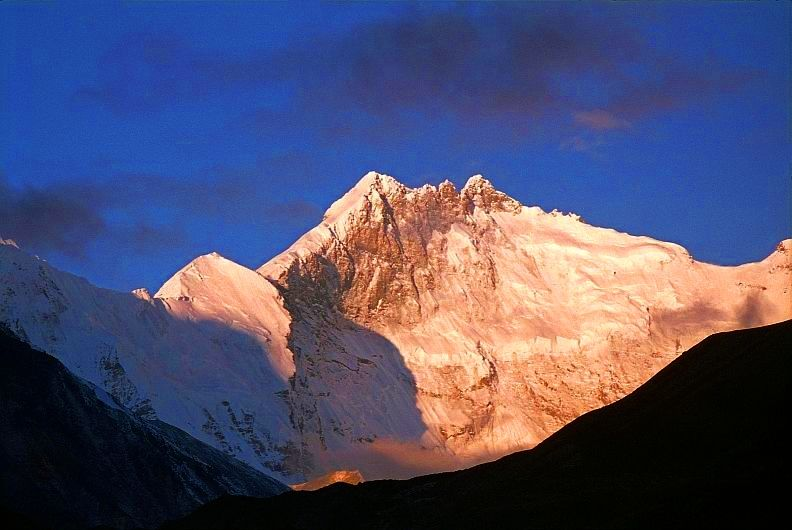
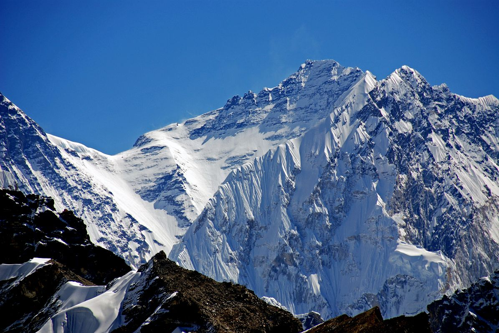

LHOTSE
A pristine trekking circuit which allows you to circle Mt. Lhotse,word's 4th highest peak.
Lhotse (Nepali: ल्होत्से L'hōtsē [loːtsi]; Tibetan: ལྷོ་རྩེ, lho rtse) is the fourth highest mountain in the world at 8,516 metres (27,940 ft), after Mount Everest, K2, and Kangchenjunga. Part of the Everest massif, Lhotse is connected to the latter peak via the South Col. Lhotse means “South Peak” in Tibetan. In addition to the main summit at 8,516 metres (27,940 ft) above sea level, the mountain comprises the smaller peaks Lhotse Middle (East) at 8,414 m (27,605 ft), and Lhotse Shar at 8,383 m (27,503 ft). The summit is on the border between Tibet of China and the Khumbu region of Nepal.
An early attempt on Lhotse was by the 1955 International Himalayan Expedition, headed by Norman Dyhrenfurth. It also included two Austrians (cartographer Erwin Schneider and Ernst Senn) and two Swiss (Bruno Spirig and Arthur Spöhel), and was the first expedition in the Everest area to include Americans (Fred Beckey, George Bell, and Richard McGowan).
 The Nepalese liaison officer was Gaya Nanda Vaidya. They were accompanied by 200 local porters and several climbing Sherpas. After a brief look at the dangerous southern approaches of Lhotse Shar, they turned their attention, during September and October, to the Western Cwm and the northwest face of Lhotse, on which they achieved an altitude of about 8,100 metres (26,600 ft). They were beaten back by unexpectedly strong wind and low temperatures. Under Schneider's direction, they completed the first map of the Everest area (1:50,000 photogrammetric). The expedition also made several short films covering local cultural topics and made a number of first ascents of smaller peaks in the Khumbu region.
 The main summit of Lhotse was first climbed on May 18, 1956, by the Swiss team of Ernst Reiss and Fritz Luchsinger from the Swiss Mount Everest/Lhotse Expedition.[4][5] On May 12, 1970, Sepp Mayerl and Rolf Walter of Austria made the first ascent of Lhotse Shar.[6] Lhotse Middle remained, for a long time, the highest unclimbed named point on Earth; on May 23, 2001, its first ascent was made by Eugeny Vinogradsky, Sergei Timofeev, Alexei Bolotov and Petr Kuznetsov of a Russian expedition.
The Lhotse standard climbing route follows the same path as Everest's South Col route up to the Yellow Band beyond Camp 3. After the Yellow Band, the routes diverge with climbers bound for Everest taking a left over the Geneva Spur up to the South Col, while Lhotse climbers take a right further up the Lhotse face. The last part to the summit leads through the narrow "Reiss couloir" until the Lhotse main peak is reached.
 By December 2008 371 climbers had summitted Lhotse while 20 died during their attempt.[8] Lhotse was not summited in 2014, 2015, or 2016 due to a series of incidents, however, it was summited again in May 2017.[9] In 2016 Ang Furba Sherpa died from a fall while working on the mountain to set ropes.
 The Nepalese liaison officer was Gaya Nanda Vaidya. They were accompanied by 200 local porters and several climbing Sherpas. After a brief look at the dangerous southern approaches of Lhotse Shar, they turned their attention, during September and October, to the Western Cwm and the northwest face of Lhotse, on which they achieved an altitude of about 8,100 metres (26,600 ft). They were beaten back by unexpectedly strong wind and low temperatures. Under Schneider's direction, they completed the first map of the Everest area (1:50,000 photogrammetric). The expedition also made several short films covering local cultural topics and made a number of first ascents of smaller peaks in the Khumbu region.
 The main summit of Lhotse was first climbed on May 18, 1956, by the Swiss team of Ernst Reiss and Fritz Luchsinger from the Swiss Mount Everest/Lhotse Expedition.[4][5] On May 12, 1970, Sepp Mayerl and Rolf Walter of Austria made the first ascent of Lhotse Shar.[6] Lhotse Middle remained, for a long time, the highest unclimbed named point on Earth; on May 23, 2001, its first ascent was made by Eugeny Vinogradsky, Sergei Timofeev, Alexei Bolotov and Petr Kuznetsov of a Russian expedition.
The Lhotse standard climbing route follows the same path as Everest's South Col route up to the Yellow Band beyond Camp 3. After the Yellow Band, the routes diverge with climbers bound for Everest taking a left over the Geneva Spur up to the South Col, while Lhotse climbers take a right further up the Lhotse face. The last part to the summit leads through the narrow "Reiss couloir" until the Lhotse main peak is reached.
 By December 2008 371 climbers had summitted Lhotse while 20 died during their attempt.[8] Lhotse was not summited in 2014, 2015, or 2016 due to a series of incidents, however, it was summited again in May 2017.[9] In 2016 Ang Furba Sherpa died from a fall while working on the mountain to set ropes.